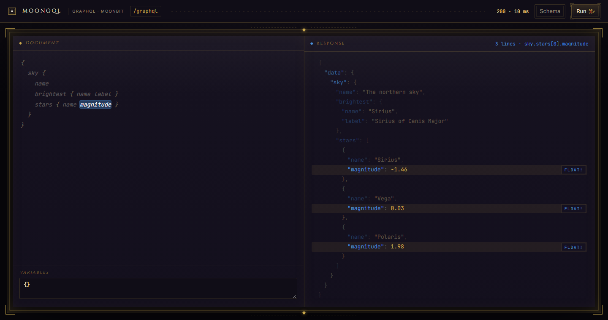

The endpoint, in the browser.
A moongql endpoint answers GraphQL over HTTP and, on the same path, serves an IDE to write queries in. Below, the library runs in this tab: write a query and the answer is executed here, then introspect the schema, open the three IDEs it can serve, and follow one request through the transport.
Write a query. Watch the graph answer.
The editor runs the library itself, compiled to JavaScript and loaded with this page — the same lexer, parser, validator and executor the server uses. Nothing here is a recorded response: type, and the answer is recomputed as you go. Three panes, one path: the document, the answer it produces, and a payload you can paste over. Hovering a field lights it in all three and names the type the schema declares for it; Run walks the document the way an executor does — every leaf, depth first — and then lets the plate go quiet again.
loading the engine…
The right-hand pane starts as the payload the endpoint returned and takes any
JSON you paste, matched to the answer by path. A document that does not validate comes back as
errors with the line and column of the field, argument or variable at fault, and
Run says so in red before it settles. The third preset asks for a variable and
supplies none, which the executor refuses before running the document.
The schema the endpoint reports.
Read from the running engine with the introspection query any GraphQL client sends —
{ __schema { types { … } } }, answered by the library's own introspection
resolver and rendered here with every wrapper intact.
loading…
Pick the IDE the endpoint serves.
Each is a single page built here, not a redirect: the endpoint returns it on a
GET without a ?query=, with the endpoint path baked in.
The first is the library's own, and the default; the rest load a third-party IDE
from a pinned CDN. The subscription socket is derived from the page's own location
unless you name one.

Built by the library: the page is an HTML string the endpoint returns, with the endpoint path baked in. A document on the left, the answer on the right, a schema drawer, variables, and the same linking the playground above has — a field lit on one side lights the same field on the other and names its path and declared type. It speaks HTTP; subscriptions still belong to GraphiQL or Altair.

GraphiQL 5.4.0 with the explorer and history plugins, loaded from a pinned CDN import map. React and the IDE are named by exact version, so a client that opens the endpoint a year from now gets the page that was shipped.

Apollo Sandbox 2.7.4 in an iframe, with the endpoint passed as an absolute URL so the embedded app can reach it from its own origin.
The page it returns
<script> window.__ALTAIR_ENDPOINT_URL__ = "/graphql"; window.__ALTAIR_SUBSCRIPTIONS_ENDPOINT__ = "ws://127.0.0.1:12000/subscriptions"; window.__ALTAIR_WEB_APP__ = true; </script>
Altair 8.5.11 reads its endpoint from globals before it boots, so the page is two scripts and three assignments. This tab has no screenshot: the build machine that captured the other two cannot reach the CDN Altair loads from, so the picture would show an empty frame rather than the IDE.
One request, six answers.
The same endpoint, driven by the transport rules: what a POST carries, what the
Accept header chooses, and what a client gets back when the request is
wrong. Pick a case.
A POST with an application/json body, asking for
application/json back.
content-type: application/json
accept: application/json
{ "query": "{ user(id: \"1\") { id name } }" }
200 · application/json
{"data":{"user":{"id":"1","name":"lfanke"}}}
The same query with the id in a variable instead of the document.
{ "query": "query ($uid: ID!) { user(id: $uid) { name } }",
"variables": { "uid": "1" } }
200 · application/json
{"data":{"user":{"name":"lfanke"}}}
A body the endpoint cannot read as JSON: a request error, not a field error, so it is refused before any document runs.
415 · unsupported media type
{"errors":[{"message":"..."}]}
415 is the status the transport assigns to a missing or unsupported
content-type, so a client can tell it apart from a GraphQL error.
With accept: application/graphql-response+json the status
separates the two kinds of failure: 400 when the request never ran, 200 when a field
failed while the rest of the response succeeded.
400 · the document did not run
{"errors":[{"message":"Cannot query field 'nope' on type 'User'",
"locations":[{"line":3,"column":5}]}]}
An array body is a batch: each entry is executed on its own and the answers come back in the same order.
200 · application/json
[{"data":{"user":{"name":"lfanke"}}},{"data":{"hero":{"id":"1"}}}]
A GET carries the same fields in the query string. It runs only queries — a mutation over GET is refused.
GET /graphql?query={ user(id: "1") { name } }
200 · application/json
{"data":{"user":{"name":"lfanke"}}}
Serve the endpoint with no IDE and a GET without ?query=
answers 405 instead of a page.
The schema the code builds, as text.
to_sdl writes the type system out; Schema::of_sdl reads it back.
Descriptions, argument defaults, @deprecated(reason:) and custom directives all
survive the trip, so the second print is byte-for-byte the first.
schema { query: Query mutation: Mutation } directive @tag(name: String!) repeatable on OBJECT | FIELD_DEFINITION "The root of the graph." type Query { "Whoever is asking." me: User "Search the graph." search(filter: UserFilter, first: Int = 10): [SearchResult!]! "The old way." legacy: String @deprecated(reason: "use search") @tag(name: "gone") }
Printed by moon run src/examples/01-sdl.